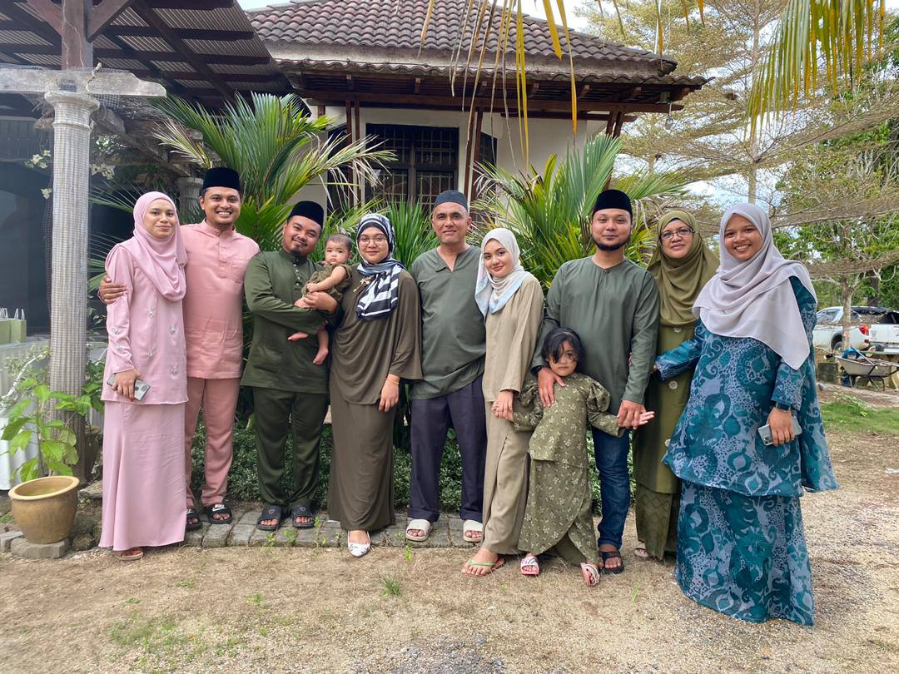
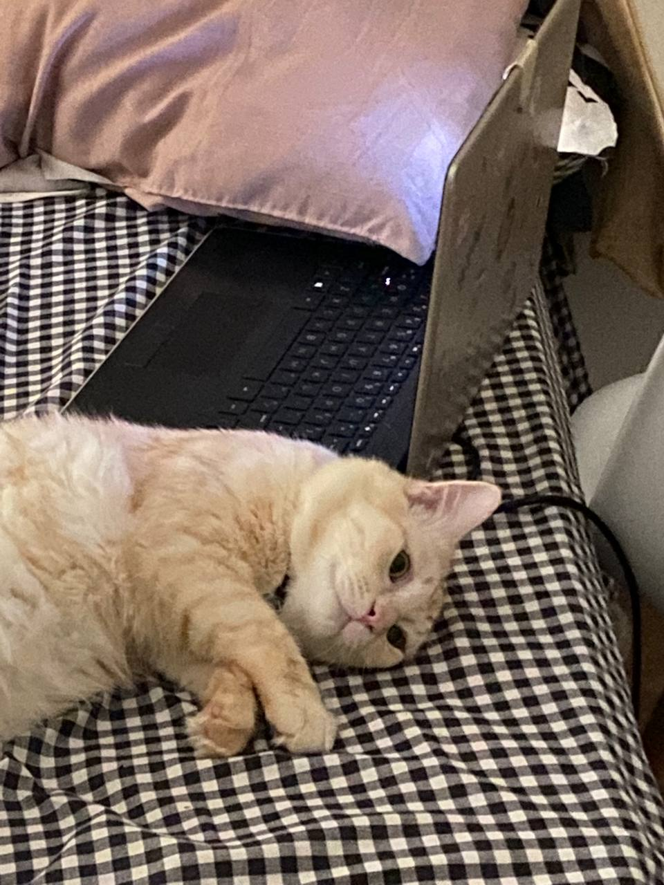
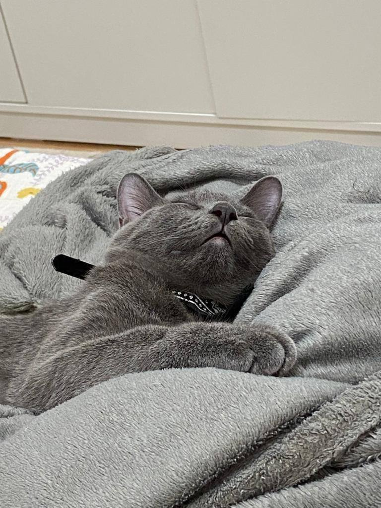
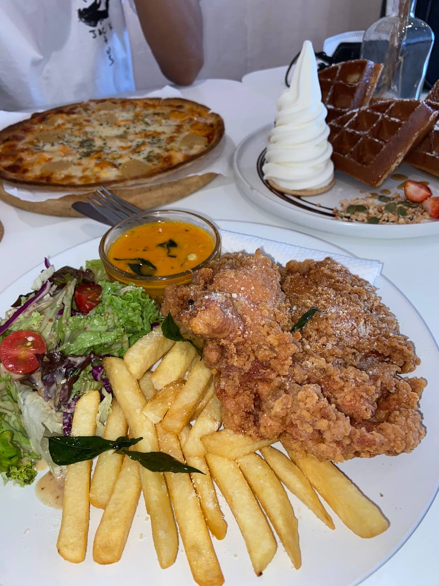
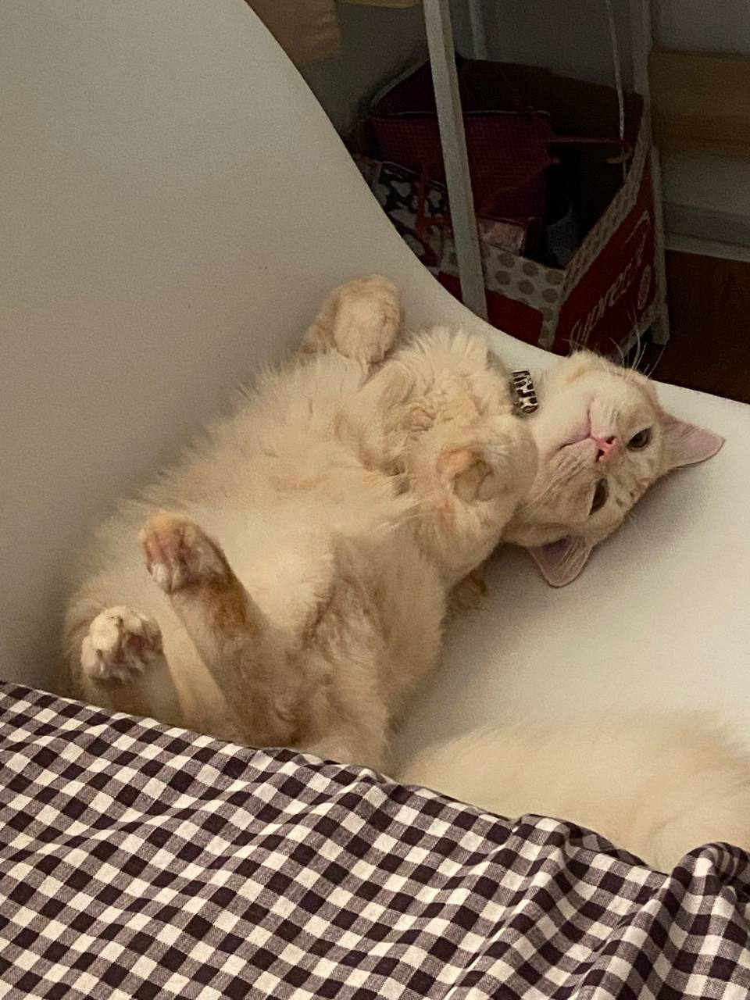

My name is Nik Nuradila binti Nik Yusof
and I live in Kota Bharu, Kelantan.

This is my family
I have 4 siblings and 2 nieces
This picture was taken on hari raya 2020
It was also riht after my brother got married.

This is my cat Kiyo.
He is a normal domestic long hair.
since we're on a lockdown and cant really go out,
i spent most of my times with my cats.

So this is my other cat Miko.
He's a british short hair.
he's 6 months old now i think?
I got him few months ater i got kiyo,
so they can be firends and wont get too lonely.

The food I ate, when we're all allowed
to dine in in the restaurant after
staying at home for almost a year or two.

Kiyo again. I have not taken so many pictures because we're all
staying at home. Im really sorry :(